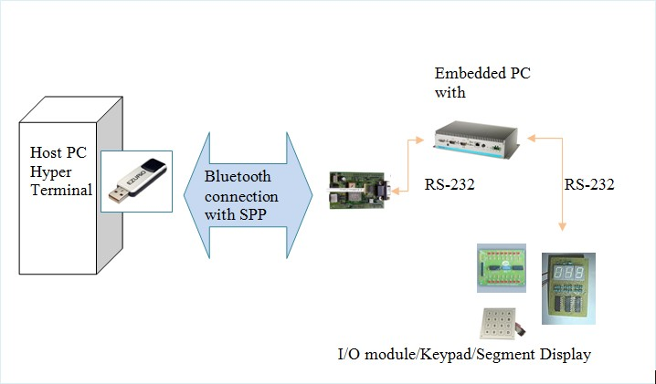

8.3 Bluetooth Application Example and Programming
Bluetooth Applications:-
8.3.1 Trigger the I/O module
Host PC to connect to UNO to trigger the I/O module (I/O display panel).
A. Understand the basic AT Command of remote Bluetooth module. Here are some of them:-
| NO # | AT COMMAND | DESCRIPTION | REMAKRS |
| 1 | AT | Check module is available. | 1. Return OK if available. |
| 2 | ATA | Accept incoming connection request | 1. Get the message "RING xxxxxxxxxxxx" from remote device with address xxxxxxxxxx. 2. Show "Connect xxxxxxxxxxxx" once accept connection. |
| 3 | ATH | Drop connection | 1. Return "No Carrier". |
| 4 | AT+BTK= | Set Pass Key | 1. Return OK if successful set Pair Key. |
| 5 | ATS512=4 | Set module discoverable and connectable. | 1. Return OK if successful. |
| 6 | AT+BTWxxxxxxxxxxxx | Initiate Paring | 1. Xxxxxxxxxxxx is remote Bluetooth module address. 2. Return OK if Successful. |
| 7 | AT+BTT | Add Paired device to non-volatile memory | 1. Return OK if successful. 2. Return ERROR if failed. |
| 8 | AT+BTIN | Request available Bluetooth modules address, device code, device name | 1. RETURN info as following format:- device address, device code, device name 2. If end of list, return OK. |
| 9 | ATDxxxxxxxxxx, yyyy | Make connection request to remote Bluetooth device xxxxxxxxxx with Profile yyyy | 1. Sucessful, return "CONNECT xxxxxxxxxxxx". 2. Failed, return "NO CARRIER". |
B. Understand RESPONSES from Bluetooth device module
| CODE | REPRESENT |
| RING | This string is send to the host when a remote device is initiating a serial port connection. The fully qualified string is in the form RING 012345678901 where 012345678901 is a 12 digit hexadecimal number which corresponds to the remote device's Bluetooth address. This response is send to the host every 2 second until the host either accepts the connection using the ATA command or rejects it using ATH command. |
| PIN? | This response is sent to the host during a pairing negotiation. The fully qualified string is PIN? 012345678901 where 012345678901 is the Bluetooth device address or the peer device. In response, the host must supply a pin code which is enter using the AT+BTK command.
If the peer address does not supply the address in the message exchange, then the address is specified as 000000000000 - and the paring will proceed as normal. |
| PAIR 'N' XXXXXXXXXXXX | This response is send to the host on termination of a pairing process. If pairing was successful then 'N'=0, if a timeout occurred then 'N'=1 and for all other unsuccessful outcomes the value will be 2.
The parameter XXXXXXXXXXXX is the address of the peer device if available. |
| PAIR 0 XXXXXXXXXXXXX | This response is sent to the host on termination of a successful pairing process. The optional MM is sent only if S Register is set to 1 to automatically save the link key. The value MM indicates the result of the save operation and a value of )) implies success, otherwise the value corresponds to an error code. |
| RX<string> | This response is sent to the host when the unit is in online-command mode and S register 531 is set to 3 and data arrives from a peer.
If the data from the string contains non-visual characters (for example ASCII 0 to 31 and ASCII 128 to 255), then those characters are translated into a 3 character escape sequence starting with '\'. For example the embedded <cr><lf> sequence would be send as the 6 characters String \0D\0A. If the data contains the character ' " ' then it is sent as \22. If the data contains the character '\' then it is send as \5C. |
C. Understanding the application flow:-
- Application must able to communicate Bluetooth device via COM port.
- Bluetooth device must able to discoverable, and preset a Pass Key.
- Application must able to receive remote Bluetooth device connection request, accept the remote connection request automatically.
- Application must able response to the remote command continuously.
- Application must able to communicate with I/O module, Keypad, or 7-segments display.